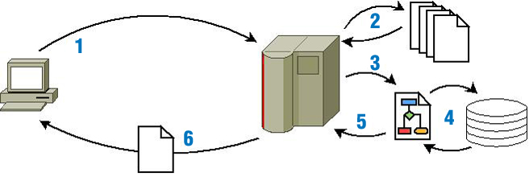

Las páginas que viste en el apartado anterior se llaman páginas web estáticas. Estas páginas se encuentran almacenadas en su forma definitiva, tal y como se crearon, y su contenido no varía. Son útiles para mostrar una información concreta, y mostrarán esa misma información cada vez que se carguen. La única forma en que pueden cambiar es si un programador la modifica y actualiza su contenido.
En contraposición a las páginas web estáticas, como ya te imaginarás, existen las páginas web dinámicas. Estas páginas, como su nombre indica, se caracterizan porque su contenido cambia en función de diversas variables, como puede ser el navegador que estás usando, el usuario con el que te has identificado, o las acciones que has efectuado con anterioridad.
Dentro de las páginas web dinámicas, es muy importante distinguir dos tipos:
- Aquellas que incluyen código que ejecuta el navegador. En estas páginas el código ejecutable, normalmente en lenguaje JavaScript, se incluye dentro del HTML (o XHTML) y se descarga junto con la página. Cuando el navegador muestra la página en pantalla, ejecuta el código que la acompaña. Este código puede incorporar múltiples funcionalidades que pueden ir desde mostrar animaciones hasta cambiar totalmente la apariencia y el contenido de la página. En este módulo no vamos a ver JavaScript, salvo cuando éste se relaciona con la programación web del lado del servidor.
- Como ya sabes, hay muchas páginas en Internet que no tienen extensión .htm, .html o .xhtml. Muchas de estas páginas tienen extensiones como .php, .asp, .jsp, .cgi o .aspx. En éstas, el contenido que se descarga al navegador es similar al de una página web estática: HTML (o XHTML). Lo que cambia es la forma en que se obtiene ese contenido. Al contrario de lo que vimos hasta ahora, esas páginas no están almacenadas en el servidor; más concretamente, el contenido que se almacena no es el mismo que después se envía al navegador. El HTML de estas páginas se forma como resultado de la ejecución de un programa, y esa ejecución tiene lugar en el servidor web (aunque no necesariamente por ese mismo servidor).
El esquema de funcionamiento de una página web dinámica es el siguiente:

Pasos:
- El cliente web (navegador) de tu ordenador solicita a un servidor web una página web.
- El servidor busca esa página y la recupera.
- En el caso de que se trate de una página web dinámica, es decir, que su contenido deba ejecutarse para obtener el HTML que se devolverá, el servidor web contacta con el módulo responsable de ejecutar el código y se lo envía.
- Como parte del proceso de ejecución, puede ser necesario obtener información de algún repositorio, como por ejemplo consultar registros almacenados en una base de datos.
- El resultado de la ejecución será una página en formato HTML, similar a cualquier otra página web no dinámica.
- El servidor web envía el resultado obtenido al navegador, que la procesa y muestra en pantalla.
Con respecto a las peticiones de los clientes es importante destacar que existen distintos modos o métodos para intercambiar información entre cliente y servidor y que deberemos tenerlo en cuenta en el desarrollo de aplicaciones web en el entorno del servidor:
- Método GET: es un método de invocación en el que el cliente le solicita al servidor web que le devuelva la información identificada en la propia URL. Lo más común es que las peticiones se refieran a un documento HTML o a una imagen, aunque también se puede referir a un programa de base de datos. En tal caso, el servidor ejecuta ese programa y le devuelve al cliente el resultado generado tras esa petición.
- Método POST: mientras que el método GET se utiliza para recuperar información, el método POST se usa habitualmente para enviar información a un servidor web. Estos casos suelen darse al enviar el contenido de un formulario de autenticación, así como entradas de datos o especificar parámetros para algún tipo de componente ejecutado en el servidor.
Este procedimiento tiene lugar constantemente mientras consultamos páginas web. Por ejemplo, cuando consultas tu correo en GMail, HotMail, Yahoo o cualquier otro servicio de correo vía web, lo primero que tienes que hacer es introducir tu nombre de usuario y contraseña. A continuación, lo más habitual es que el servidor te muestre una pantalla con la bandeja de entrada, en la que aparecen los mensajes recibidos en tu cuenta. Esta pantalla es un claro ejemplo de una página web dinámica.
Obviamente, el navegador no envía esa misma página a todos los usuarios, sino que la genera de forma dinámica en función de quién sea el usuario que se conecte. Para generarla ejecuta un programa que obtiene los datos de tu usuario (tus contactos, la lista de mensajes recibidos) y con ellos compone la página web que recibes desde el servidor web.
Aunque la utilización de páginas web dinámicas te parezca la mejor opción para construir un sitio web, no siempre lo es. Sin lugar a dudas, es la que más potencia y flexibilidad permite, pero las páginas web estáticas tienen también algunas ventajas:
- No es necesario saber programar para crear un sitio que utilice únicamente páginas web estáticas. Simplemente habría que conocer HTML/XHTML y CSS, e incluso esto no sería indispensable: se podría utilizar algún programa de diseño web para generarlas.
- La característica diferenciadora de las páginas web estáticas es que su contenido nunca varía, y esto en algunos casos también puede suponer una ventaja. Sucede, por ejemplo, cuando quieres almacenar un enlace a un contenido concreto del sitio web: si la página es dinámica, al volver a visitarla utilizando el enlace su contenido puede variar con respecto a cómo estaba con anterioridad. O cuando quieres dar de alta un sitio que has creado en un motor de búsqueda como Google. Para que Google muestre un sitio web en sus resultados de búsqueda, previamente tiene que indexar su contenido. Es decir, un programa recorre las páginas del sitio consultando su contenido y clasificándolo. Si las páginas se generan de forma dinámica, puede ser que su contenido, en parte o por completo, no sea visible para el buscador y por tanto no quedará indexado. Esto nunca sucedería en un sitio que utilizase páginas web estáticas.
Como ya sabes, para que un servidor web pueda procesar una página web dinámica, necesita ejecutar un programa. Esta ejecución la realiza un módulo concreto, que puede estar integrado en el servidor o ser independiente.
Además, puede ser necesario consultar una base de datos como parte de la ejecución del programa. Es decir, la ejecución de una página web dinámica requiere una serie de recursos del lado del servidor.
Estos recursos deben instalarse y mantenerse. Las páginas web estáticas sólo necesitan un servidor web que se comunique con tu navegador para enviártela. Y de hecho para ver una página estática almacenada en tu equipo no necesitas siquiera de un servidor web. Son archivos que pueden almacenarse en un soporte de almacenamiento como puede ser un disco óptico o una memoria USB y abrirse desde él directamente con un navegador web.
Pero si decides hacer un sitio web utilizando páginas estáticas, ten en cuenta que tienen limitaciones. La desventaja más importante ya la comentamos anteriormente: la actualización de su contenido debe hacerse de forma manual editando la página que almacena el servidor web. Esto implica un mantenimiento que puede ser prohibitivo en sitios web con gran cantidad de contenido.
Las primeras páginas web que se crearon en Internet fueron páginas estáticas. A esta web compuesta por páginas estáticas se le considera la primera generación. La segunda generación de la web surgió gracias a las páginas web dinámicas. Tomando como base las web dinámicas, han ido surgiendo otras tecnologías que han hecho evolucionar Internet hasta llegar a lo que ahora conocemos.